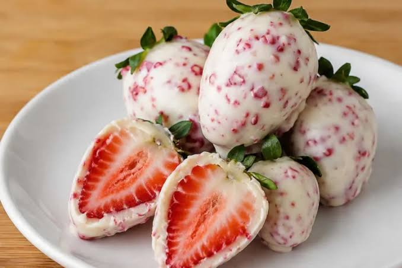

Página 3 - Receita de bolo com listas
Morango Cravejado
O bombom do amor viral com brigadeiro cremoso e coberto de pedacinhos crocantes

Ingredientes (8 porções)
Brigadeiro de leite em pó
- 8 morangos frescos
- 1 lata de leite condensado
- 1 caixa de creme de leite
- 4 colheres (sopa) de leite em pó
- 1 colher (sopa) de manteiga
Cobertura cravejada
- 2 xícaras (chá) de açúcar
- 1 xícara (chá) de água
- 2 colheres (sopa) de vinagre
- corante alimentício vermelho a gosto
- 400 g de chocolate branco
Modo de preparo
- Lave os morangos com água corrente, seque bem com papel toalha, retire as folhas e se quiser, também pode guardar as folhas para decorar posteriormente.
- Em uma panela, misture o leite condensado, o creme de leite, o leite em pó e a manteiga.
- Leve ao fogo médio-baixo e mexa sem parar até que ele chegue ao ponto de desgrudar do fundo da panela.
- Cubra com plástico-filme e espere esfriar completamente.
- Enquanto isso, faça a calda da cobertura cravejada adicionando o açúcar, a água, o vinagre e o corante e misturando bem com o fogo desligado para dissolver os grãos de açúcar.
- Leve ao fogo médio e deixe cozinhar até começar a borbulhar e engrossar, sem mexer para não açucarar a calda. Para saber se ela chegou no ponto, pingue uma gota da calda em um copo com água gelada e verifique se ela endurece na hora. Se sim, desligue o fogo.
- Transfira a calda de caramelo para um tapete de silicone e espalhe com uma espátula por toda a extensão do objeto, fazendo uma camada fina para quebrar com mais facilidade.
- Deixe descansar até esfriar e endurecer completamente.
- Enquanto isso, espete os morangos em palitos de churrasco, pegue porções do brigadeiro de leite em pó já resfriado e cubra as frutas. Dica: unte as mãos com um pouco de manteiga para não grudar.
- Assim que a calda endurecer, dobre o tapete de silicone ao meio e aperte com as mãos para quebrar a calda em pedaços.
- Em um recipiente grande, derreta o chocolate branco de 30 em 30 segundos no micro-ondas ou em banho-maria.
- Despeje os pedaços da calda de açúcar triturada no chocolate branco derretido e misture bem.
- Passe os morangos envoltos pelo brigadeiro de leite em pó na cobertura cravejada, escorra o excesso e deixe secar em um tapete de silicone ou um recipiente forrado com papel-manteiga.
- Retire os palitos de churrasco dos morangos cravejados e tampe o buraco com um pouco da cobertura. Se quiser, coloque a folha do morango reservada no local onde foi adicionada a cobertura para decorar.
Fonte: Receita do Morango Cravejado